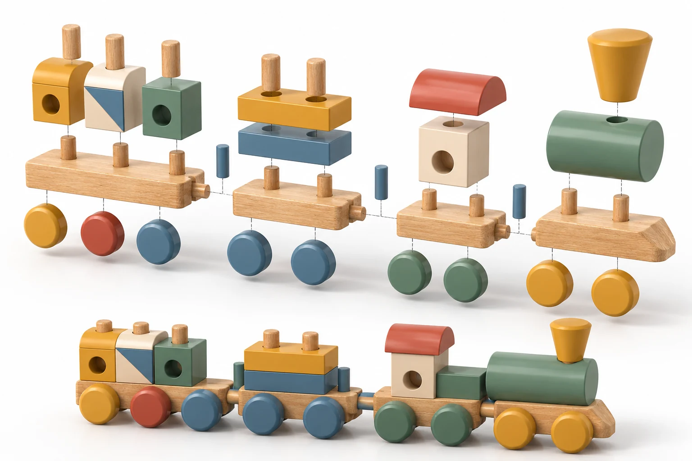
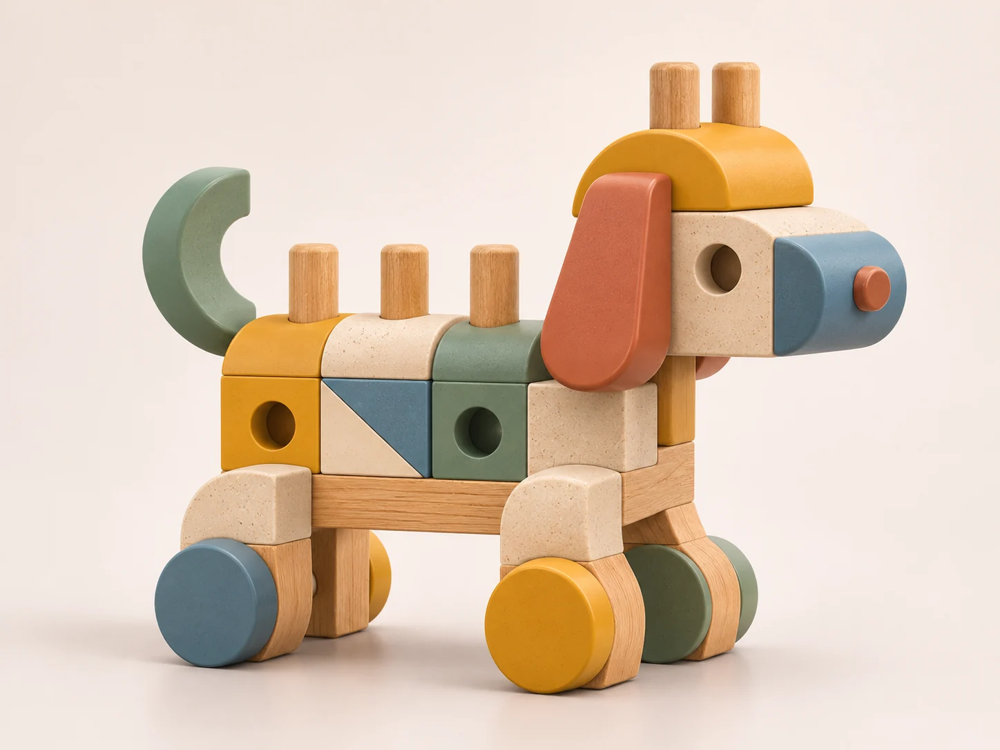
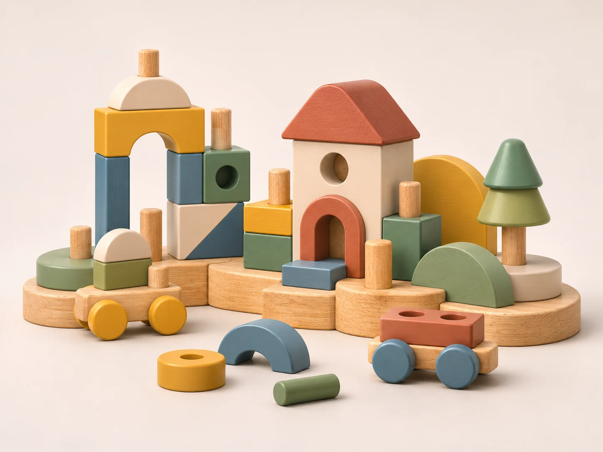
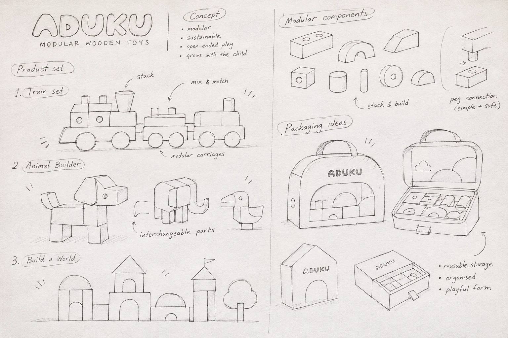
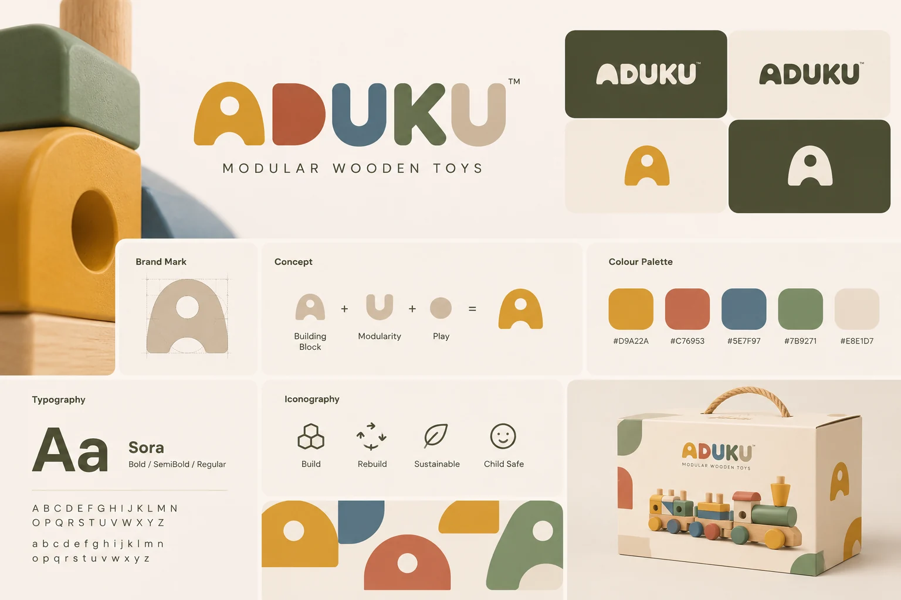
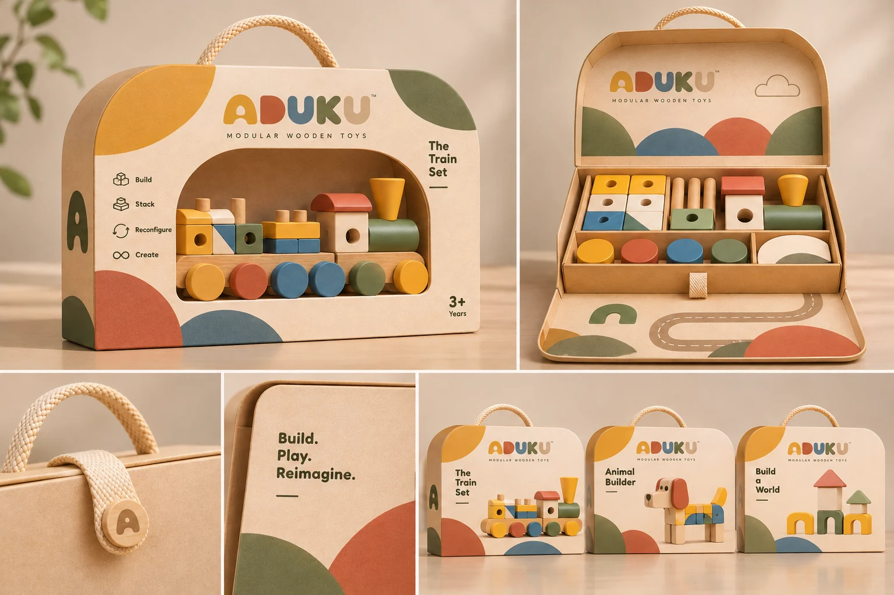

ADUKU.
TEAM PROJECTA modular wooden toy system that turns a collection of simple components into an evolving play experience. Stack, connect, rearrange and make something different every time.

The starting point
What if a toy didn't have to be replaced every time a child outgrew the way they played with it?
Children's interests, abilities and ways of playing change as they grow. I wanted to explore how a toy could respond to those changes, rather than remain a product with one fixed purpose.
Aduku is a modular toy concept built around stackable and interlocking components. Instead of designing one object with one intended use, I explored a shared component system that allows children to assemble, customise and recombine pieces into different forms and play scenarios.
The design opportunity
A shared set of parts. More than one way to play.
A single-purpose toy can limit the ways a child interacts with it over time.
Separate toys for separate play modes can mean more components and more products.
More pieces and product sets create an organisation challenge.
How might simple components become an evolving play system that grows with a child's imagination?
A system of interchangeable parts
Aduku uses a shared language of geometric wooden blocks, cylindrical pegs and wheels that can be assembled, reconfigured and expanded into different toys and play worlds.

Components are designed to work as part of a larger system.
Parts can be recombined to create different forms.
Children can explore their own combinations and play ideas.
Pieces can connect and build into larger structures.
One system, three play directions
The product family explores how the same component language can lead to different kinds of play.


These configurations show the idea behind the system: the value is not limited to one finished object. It comes from the relationships between the pieces and the possibilities they create.
From sketch to system
The early exploration focused on the product family, component vocabulary, assembly logic and ways the pieces could be stored.

Sketch product forms, individual parts and alternative configurations.
Investigate how pegs, holes, wheels and blocks work together.
Test how one component family can create multiple toy forms.
Carry the same modular language into storage and packaging.
Material & finish direction
The material exploration considers the tactile quality of wood alongside alternative low-impact material directions.

Material thinking
Natural wood and recycled husk-based composite were explored as potential material directions. The aim was to retain a warm, tactile quality while considering the material footprint of the product.
These are concept-stage directions, not a claim that the final toy has been manufactured from or tested with these materials.
Material validation, durability, finish safety and manufacturability would be required before production.
Brand & packaging as part of play
The packaging is designed as more than a box to discard. It becomes part of the product family and an opportunity to keep the components organised between play sessions.

A visual language that feels like play
The identity uses rounded geometry and a warm palette of mustard, terracotta, dusty blue, sage and cream. The shapes echo the forms found in the toy components and help connect the product, brand and packaging.
Packaging directions explore organised compartments, reusable storage and ways to make the product visible while keeping the set together.
What Aduku explores
Aduku is an exploration of how modularity can create more adaptable and open-ended play.
- A shared component family can support different toy configurations.
- Stackable and interlocking elements encourage building and reconfiguration.
- Product, brand and packaging can work as one connected experience.
- Material exploration can be considered alongside play value and product longevity.
What I took away: Designing a toy system means thinking beyond the first configuration. The connections between parts can be just as important as the parts themselves.